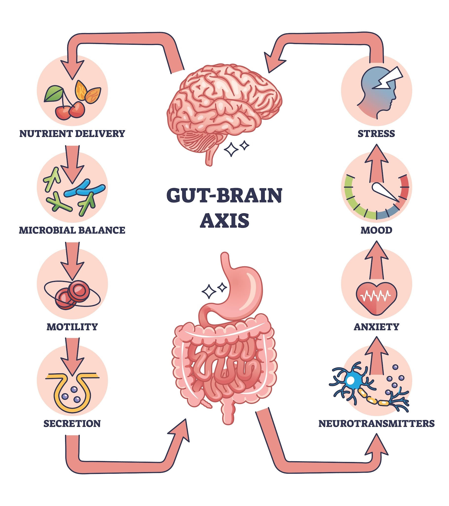

Microbiome Mapping & Digestive Analysis in Ontario

Your Gut is a Complex Ecosystem. Stop Treating it with Generic Solutions.
If you are navigating the daily frustration of persistent bloating, the unpredictability of IBS, or the systemic toll of "Endo-belly," you know that over-the-counter probiotics and generic "more fiber" advice are rarely the answer. These symptoms are signals of a deeper imbalance within your microbial fingerprint.
In my virtual naturopathic practice, I use advanced, non-invasive stool testing to move beyond simple screening. We utilize a "360-degree" diagnostic approach that combines DNA-based PCR technology with traditional culture methods to map your entire digestive environment. This allows us to build a precise strategy to restore your foundation from the inside out.
The Science of Comprehensive Microbiome Analysis
Standard labs often only look for acute infections. Our advanced functional analysis investigates the abundance, diversity, and metabolic function of your gut to see how it impacts your overall health.
1. Microbiome Abundance & Diversity
Using DNA-based PCR technology, we measure over 45 essential bacteria to ensure your internal pharmacy is diverse enough to support your immune system and metabolism. We look for the keystone species that protect your gut lining and prevent systemic inflammation.
2. Pathogen & Parasite Screening
We conduct a rigorous search for viruses, pathogenic bacteria, and parasites that may be driving chronic distress. This includes testing for hidden triggers that standard screenings frequently miss, ensuring we identify the root cause of your symptoms.
3. Functional Digestive Markers
Digestion is a mechanical and chemical process. We measure how well your body is actually performing its job by assessing:
Pancreatic Enzymes: To see if you are breaking down fats and proteins efficiently.
Inflammatory Markers: Identifying the presence of "leaky gut" or localized immune activation.
Short-Chain Fatty Acids: Measuring the metabolic byproducts that fuel your colon cells and regulate your mood.

4. The "Susceptibility" Advantage
If a pathogen is found, the lab tests those specific microbes against various pharmaceutical and botanical agents. This tells us exactly which natural or medical tools will be most effective for your specific ecosystem.
A Strategic Roadmap to Digestive Resilience
We don't just provide a lab report; we provide a clinical path forward. My evidence-based virtual process ensures your data is translated into a sustainable plan:
MSc-Level Interpretation: Using my Master of Science in Nutritional Sciences, I analyze your markers to see how your gut health is influencing your hormones, your energy, and your systemic inflammation.
Precision Nutrition: We use your "Microbial Fingerprint" to determine which foods will actually nourish your specific bacteria, moving away from restrictive "one-size-fits-all" diets.
Nervous System Integration: We address the Gut-Brain Axis, ensuring your stress response isn't "revving up" your digestive symptoms.
Frequently Asked Questions
Stop Managing Symptoms. Start Restoring Your Ecosystem.
If you’re ready to stop the guesswork and start building a more resilient digestive system with a data-driven approach, let’s get to work.